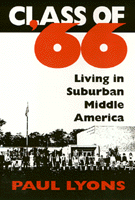

Tracing the lives of the apolitical, suburban youth of the 1960s
Tracing the lives of the apolitical, suburban youth of the 1960s


 Tracing the lives of the apolitical, suburban youth of the 1960s
Tracing the lives of the apolitical, suburban youth of the 1960s

|  |
Class of '66Living in Suburban Middle AmericaPaul Lyonspaper EAN: 978-1-56639-214-3 (ISBN: 1-56639-214-4) |
In the midst of the Vietnam war, sit-ins, counter-culture, and campus rallies, the 1966 graduating class of a South New Jersey coast high school came of age on the margins of political and cultural upheaval. Rather than presenting the stereotype of Sixties youth scene, this study reveals this group to be conservative teenagers shaped by mainstream loyalties to God, Country, and Family. These "Coasters"—white, middle-class, suburban baby-boomers—were spectators of rather than participants in the decade's activism. Yet, even as they were missed by the powerful currents of the times, their lives were touched by those currents more than is suggested by the stereotype of Richard Nixon's "Silent Majority."
Paul Lyons interviewed 47 members of the class of 1966, recording recollections of their school days, politics, work, family life, community, and expectations for future careers and family. Each chapter is complemented by personal profiles of individual "Coasters." Removed from both the urban experience and that of the elite suburbs, these teenagers disprove popular cultural assumptions that all baby boomers, with few exceptions, went to Woodstock, protested against the Vietnam War, engaged in drug experimentation, or joined the hippie counter-culture. Instead, Lyons' study explores how their then relative ambivalence to political and cultural rebellion did not preclude many "Coasters" from indirectly incorporating over the years certain core Sixties values on issues of race, gender, mobility, and patriotism.
Excerpt available at www.temple.edu/tempress
"Seeking to challenge the notion that all members of the '60s generation 'raised holy hell as they grooved on acid rock, smoked grass, dropped acid, and fought against authority in general and the Vietnam War makers in particular,' Lyons interviewed 47 graduates of the class of 1966 at Coastal High School, the fictionalized name of a southern New Jersey high school in the suburbs of Atlantic City. The different chapters—'Vietnam,' 'The Sixties,' 'White on Black,' 'Growing Up Female'—hit all the major topics, and the interviewees come across as honest and frank about their experiences."
—Publishers Weekly
Acknowledgments
Introduction
1. Home Life
2. School Days
3. Vietnam
4. The Sixties
5. White on Black
6. Growing Up Female
7. Career, Family, Community
Conclusion
Methodological Appendix
Notes
Bibliography
Index
Paul Lyons is Professor of Social Work at Richard Stockton College of New Jersey.
© 2015 Temple University. All Rights Reserved. This page: http://www.temple.edu/tempress/titles/1132_reg.html.